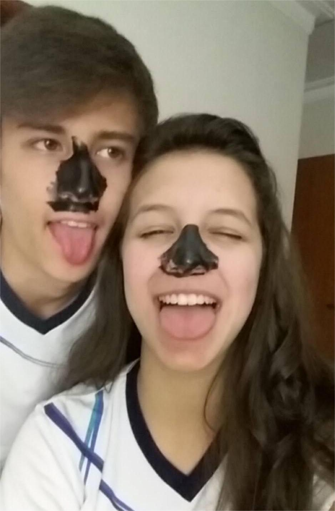
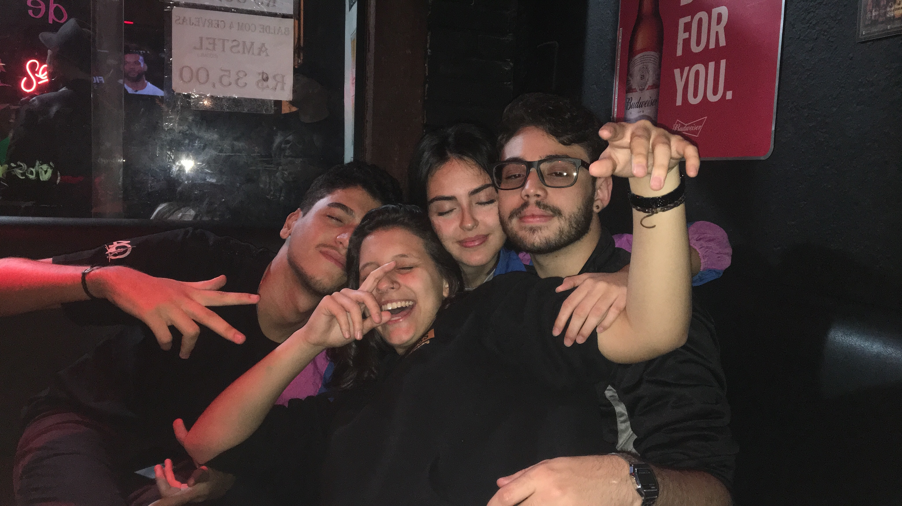
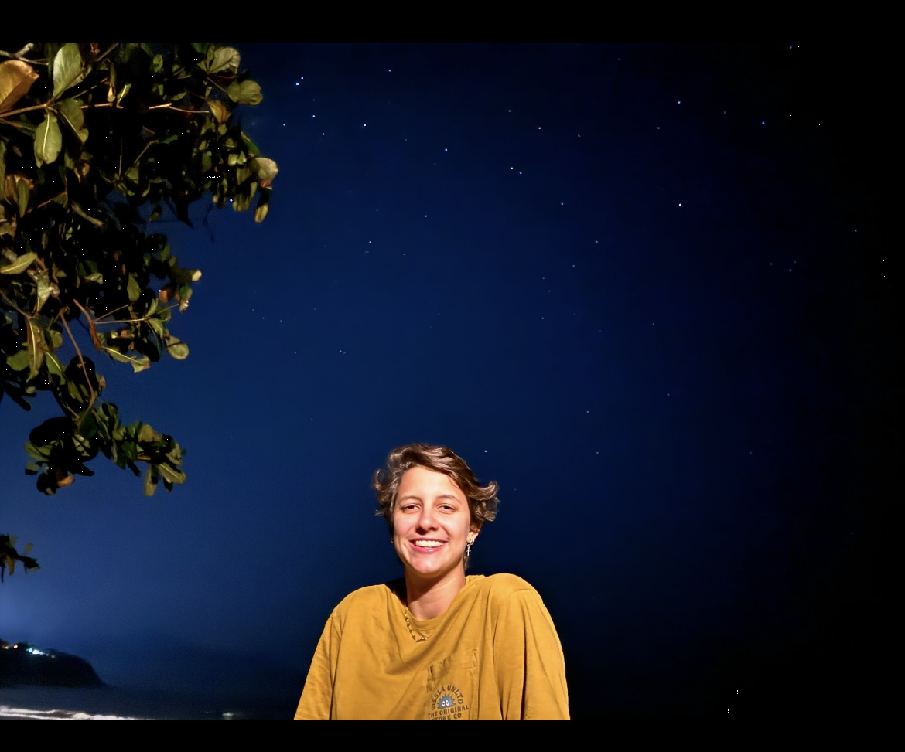
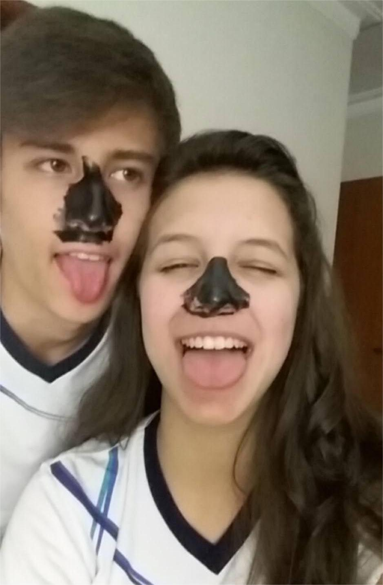
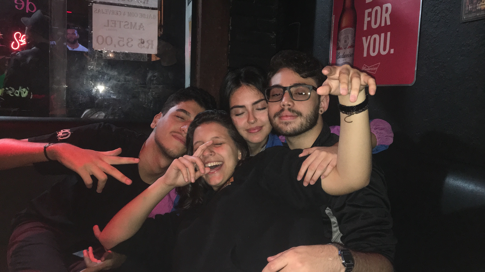
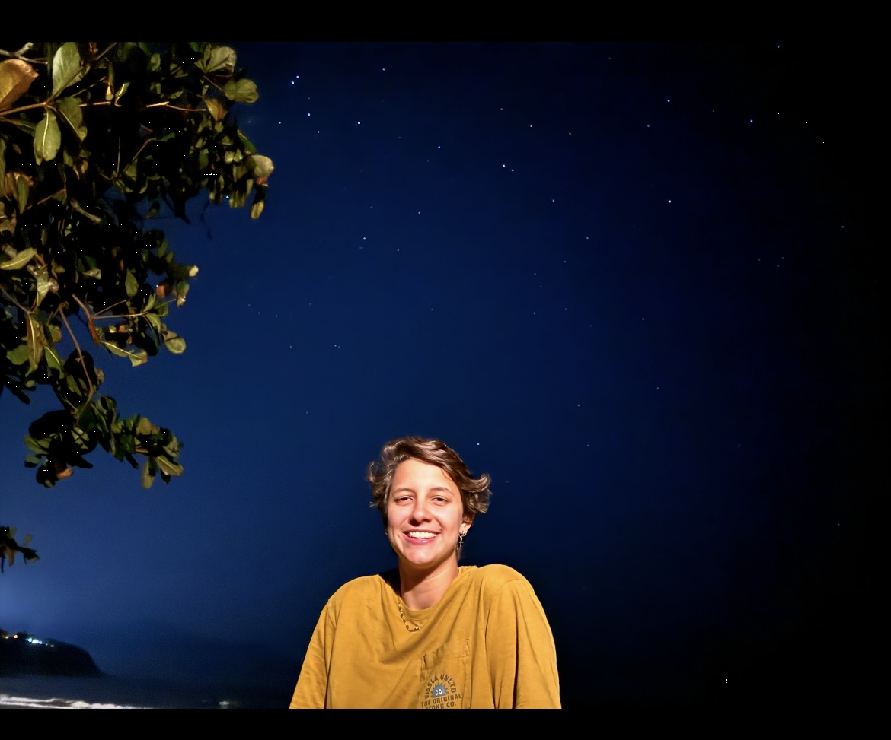

Ana Luiza, de apenas 25 anos, sofreu um grave acidente nos Estados Unidos e está atualmente em estado delicado após um traumatismo craniano. Ela passou por uma neurocirurgia de emergência e está internada na UTI. Neste momento, cada dia é uma batalha, mas ela tem mostrado uma força imensa e continua lutando com coragem.
Os custos médicos nos Estados Unidos são extremamente altos. Só o transporte de ambulância, necessário no momento do resgate, custou cerca de 20 mil dólares. E com a continuidade do tratamento, exames, internação e medicamentos, a famÃlia enfrenta uma situação financeira muito desafiadora.
Por isso, criamos essa campanha para arrecadar fundos e garantir que a Ana tenha acesso a tudo que precisa nesse processo tão difÃcil de recuperação. Toda ajuda é bem-vinda — seja com uma contribuição financeira ou compartilhando essa mensagem com outras pessoas.
Se não puder doar, pedimos com carinho que continue orando por ela e divulgando essa causa 🙏🏻
Com o apoio de cada um, podemos fazer a diferença na vida da Ana Luiza.
Contamos com a sua solidariedade. Obrigado!

 




